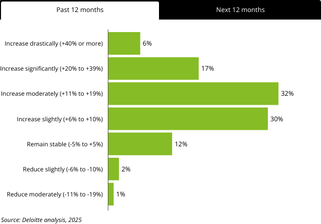
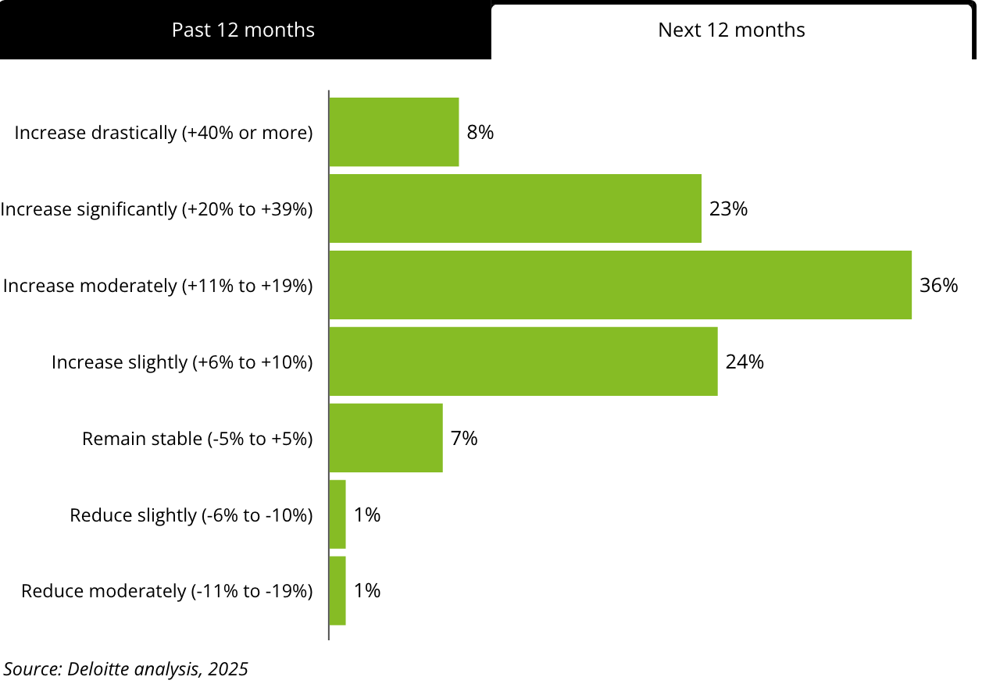
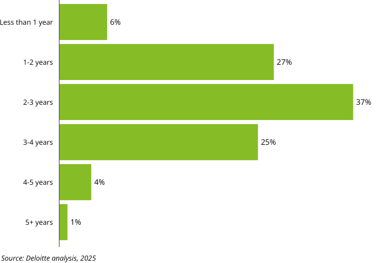
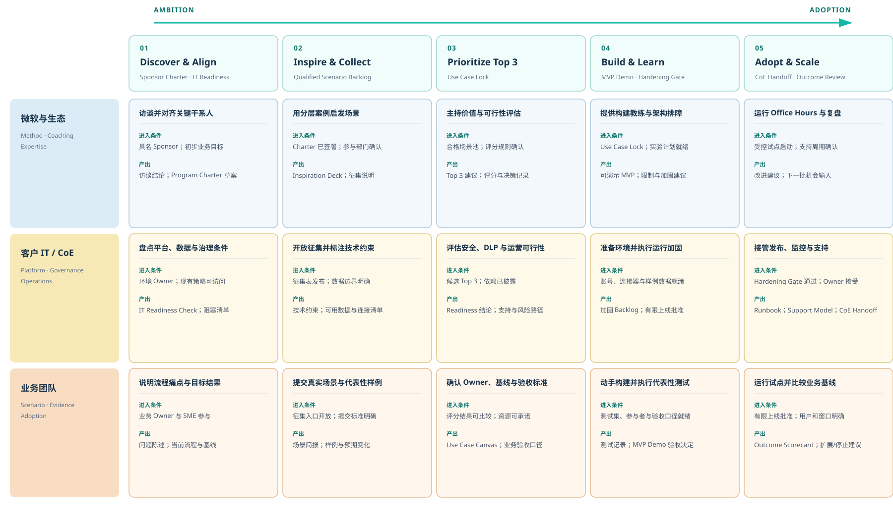
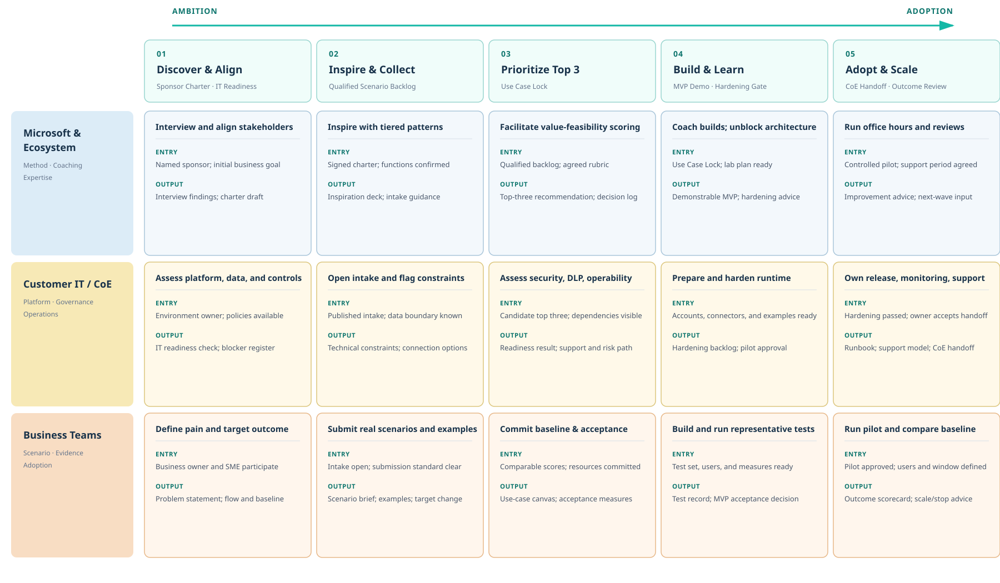

已增加 AI 投资
85%
过去 12 个月增加了 AI 投资的组织比例。

Figure 1 · Past 12 months：6% 大幅增加、17% 显著增加、32% 中度增加、30% 小幅增加。01 / AI 价值挑战
Deloitte 2025 年调查显示，AI 投资仍在快速增长，但典型 AI 用例通常需要两到四年才能实现令人满意的 ROI，显著长于技术投资通常预期的 7–12 个月回收期。[1]

Figure 1 · Past 12 months：6% 大幅增加、17% 显著增加、32% 中度增加、30% 小幅增加。
Figure 1 · Next 12 months：8% 计划大幅增加、23% 显著增加、36% 中度增加、24% 小幅增加。
Figure 2：2–3 年最常见（37%），其次为 1–2 年（27%）和 3–4 年（25%）。方法：Deloitte 于 2025-08-15 至 2025-09-05 调查欧洲与中东 14 个国家的 1,854 名高级管理者，并在法国、德国、荷兰和英国开展 24 次深度访谈；受访组织均已有日常 AI 实施。[1]
02 / 根因分析
Deloitte 将 ROI 难以实现归纳为五项高管访谈主题。本文进一步按可行动的系统边界归并为三类根因，但不把访谈主题解释为经统计识别的因果效应：这些结论说明障碍如何发生，不提供每项障碍对 ROI 延迟的独立贡献率。[1]
供应商关系、员工满意度和客户互动等收益重要但难以货币化；与此同时，工具和用例快速演进，项目中途的目标与指标会发生变化。结果是团队有活动数据，却缺少稳定的基线、归因口径和决策指标。[1]
孤立平台和碎片化系统阻碍前后对比，组织也容易高估数据成熟度。使用理想化虚拟数据的 PoC 可以顺利演示，但接入真实数据后才暴露质量、访问、连接和基础设施问题；Deloitte 还指出约四分之一组织将数据与基础设施不足视为 ROI 障碍。[1]
采用效果取决于文化阻力、员工使用和工作流调整；同时，AI 往往与数据质量提升、团队重组和运营优化一起发生，使其独立贡献难以分离。Agentic AI 的跨系统、多步骤自治进一步放大了流程设计、人工监督和变革管理要求。[1]
五项障碍分别作用于价值定义、技术基础和组织采用，并共同拉长从 PoC 到可衡量成效的周期。
03 / Program 介绍
Agentic AI Innovation Accelerator 是一套由业务目标牵引、微软提供方法与教练、客户 IT 和业务团队共同执行的 Customer Enablement Program。它以 Copilot Studio 的 Agent、Workflow 和配套 App 为构建平台，通过统一的场景征集、优先级选择、动手构建、试点衡量与运营接管，把 AI ambition 推进到 enterprise adoption；客户始终拥有场景、业务决策和运行责任。
通过业务启发、统一征集和价值 × 可行性评估，形成 Top 3 场景组合；每个场景明确业务 owner、当前基线、实验边界、数据依赖和验收标准。
客户 maker、业务 SME 和 IT 共同完成关键路径，使用代表性样例验证功能、限制和人工接管；微软负责教练、架构建议和疑难排解，不替代客户构建。
客户 IT / CoE 接收环境、发布、监控、支持和资产管理；业务 owner 按自身基线评估试点，Sponsor 决定迭代、有限上线、扩展或停止，并从 backlog 选择下一批机会。
不枯燥罗列 Copilot Studio 的配置菜单。主要引入能引发客户共鸣的 AI 业务模式，让具体的痛点先于技术方案进入深入讨论。
跳出脱离实际的理论讲解。要求客户带入真实工作场景，由业务方提出领域要求与基线，IT 与业务协同，亲自构建出可验证核心想法的解决方案原型。
微软及生态伙伴作为教练提供技术与方法论支持，而非包揽所有代码和实施工作。由客户掌握业务产出成果，主导内部发布与规模化应用。
04 / 控制模型与流程总览
客户 Overview 定义了 Discover & Align、Inspire & Collect、Prioritize Top 3、Build & Learn、Adopt & Scale 五阶段。本指南把它落实为八周节奏和五道决策闸：发起人章程、用例锁定、MVP 演示、加固评审、CoE 交接。IT Readiness Check 与场景征集并行，是进入条件，不是第六道闸；没有规定证据，就不进入下一阶段。


用于 sponsor 对齐和客户沟通，覆盖 Program 定位、五阶段旅程、风险控制、运营节奏与场景分层。它建立共同语言，不承担逐项执行说明。
用于 Program 团队、客户 IT、业务 owner 和 sponsor 共同推进。每个阶段都给出交付物、最低证据、批准人、复盘节奏和降级路径。
05 / Program 响应机制
Program 已明确为一套从对齐、征集、筛选、构建到接管的客户自驱机制。它不保证消除所有外部约束，而是把三类根因转成可检查的阶段任务、决策闸和证据：问题未解决时缩小范围、延后或停止，而不是继续追加功能。
同时使用财务和非财务指标，先记录当前基线和衡量窗口，再以同一口径筛选、验收和复盘。
在场景征集期间同步核对环境、身份、数据、连接和治理条件；构建必须使用代表性样例，并在有限上线前关闭运行缺口。
业务 owner 对场景和验收负责，客户团队亲自构建；试点持续检查使用与人工接管，最终由 CoE 接收运行资产和下一批创新机制。
06 / Discover & Align
启动阶段确定谁有权做决定、客户愿意投入什么、哪些数据和平台条件可用，以及何种证据足以继续。发起人缺席时，Program 不进入阶段 01。IT 阻塞没有 owner 时，不进入 Top 3 选择。
记录业务目标、范围、决策机制、参与部门、人员投入、风险接受、停止条件和 12 周 ROI 窗口，由具名发起人在阶段 01 开始前签署。
明确 sponsor、客户协调人、客户 IT owner、业务 owner、SME、maker、最终用户和批准人，并为每项交付物只指定一个 owner。
与场景征集并行核对环境、身份、许可、数据、连接器、DLP、ALM 和支持路径。它是进入条件，不是独立决策闸；每个缺口都要有 owner、日期和降级方案。
决策闸只回答是否可以继续；阶段负责完成工作。每道闸都要有证据、批准人和未通过时的处理路径。IT Readiness Check 与征集并行，不单独占一道闸。
| 决策闸 | 参考时间 | 最低证据 | 批准人 |
|---|---|---|---|
| 发起人章程 | 第 0 周 | 业务目标、决策委员会、退出条件与 12 周 ROI 窗口 | 客户发起人 |
| 用例锁定 | 第 2 周 | Top 3、用例画布、RACI 与成功度量 | 发起人 + 业务 Owner + 客户 IT |
| MVP 演示 | 第 4 周 | 第一个可用 agent 对照成功标准完成验证 | 业务 Owner |
| 加固评审 | 第 6 周 | 可观测性、评测集、回滚与安全评审通过 | 客户 IT + 业务 Owner |
| CoE 交接 | 第 8 周 | 客户 IT 接手运营，运行手册与支持路径到位 | 客户 IT / CoE |
十二道题只回答从哪一层起步，不替代发起人章程。成熟度与资源合成「撑得住的层级」，目标单独命名「想要的层级」；建议起步不超过撑得住的那一层。差距本身就是 6% 机制：能建，不等于能上线和持续运行。
07 / Inspire & Collect
场景征集不是功能愿望清单。每个提交必须说明用户、当前流程、问题频次、涉及数据与系统、预期变化和业务 owner。三个层级同时决定启发范围和交付动作：第 1 层自助、第 2 层按已验证范本改造、第 3 层由交付伙伴在同一套闸门内实施。它们不是产品 SKU。
适合邮件分流、发票或订单识别、外部数据收集等重复工作。以节省处理时间和减少手工步骤为目标，通常以天为单位形成原型。
适合文档审查、复杂文档生成和 AI 翻译等需要集成、领域判断与人工检查点的工作。通常需要客户 IT 参与，以周为单位构建和验证。
适合运营 Agent、业务系统 Agent 和销售或现场服务运营 Agent。需要安全、治理、可观测性、人工接管和跨团队运营设计，不适合作为单日 Workshop 的完整上线目标。
提交必须补齐用户、owner、当前流程、频次、输入输出、数据、系统、人工检查点和基线。场景点名需要的能力，Lab 只教那一项；部门路径按前置条件展开，而不是按固定课表上课。产品构建入口的选择属于动手阶段的能力，不在征集阶段预先指定。
08 / Prioritize Top 3
选择会议不按热度或部门声量排序，也不要求每个层级各选一个。评分用四轴 1–5：价值、数据就绪度（越高越好），复杂度、工作量（越低越好）。微软主持评分，客户 IT 判断数据与运营条件，业务 owner 对基线和验收负责，发起人在依赖和资源透明后批准 Top 3。
| 评分轴 | 方向 | 必须回答的问题 | 未通过时处理 |
|---|---|---|---|
| 价值 | 越高越好 | 改善哪个周期、质量、产能或风险指标？ | 回到场景澄清 |
| 数据就绪度 | 越高越好 | Workshop 能否获得代表性样例和合法访问路径？ | 缩小范围或延后 |
| 复杂度 | 越低越好 | 关键路径能否在第 4 周形成可测试 MVP？ | 拆分成更小实验 |
| 工作量 | 越低越好 | 谁处理权限、日志、异常、变更与发布？ | 保留为学习样例，不进入试点 |
09 / Build & Learn
Workshop 或构建冲刺结束时得到的是可测试 MVP，不是生产承诺。业务团队先用代表性样例验收关键路径，客户 IT 再检查安全、评估、可观测性、ALM、容量、回退和支持。两道闸都通过后，才可进入受控试点。
展示输入、动作、输出和人工检查点；用正常、边界、错误和敏感样例记录期望、实际结果与人工判断；同时公开限制、失败和下一轮待办。未通过时回到实验设计或停止。
确认权限和数据合规、评估与监控、人工接管、回退、版本发布、容量监控和支持路径。未通过时继续加固，不得以演示成功替代上线批准。
每周 Build Clinic 关闭技术阻塞，每周 Test Review 更新测试证据，decision log 持续记录决定、依据、owner 和待验证假设；每项结果只有一个明确 owner。
| 角色 | 负责 | 不负责 | 核心决策 |
|---|---|---|---|
| 微软 | 方法、场景启发、评分引导、产品架构、Workshop 教练与疑难排解 | 客户内部优先级、业务验收和上线运营 | 建议构建模式与风险边界 |
| 客户 IT | Program 协调、环境、权限、连接器、平台标准、发布和支持路径 | 代替业务定义价值或验收 | 平台 readiness 与运营可接续性 |
| 业务团队 | 当前流程、领域知识、真实样例、基线、验收、使用反馈与采用 | 环境管理和平台级发布 | 场景是否达到业务验收标准 |
| 客户 Sponsor | 跨部门优先级、资源、冲突处理和规模化决策 | 日常构建和测试 | 选择三个场景；批准试点；决定规模化或停止 |
10 / Adopt & Scale
Handoff 确认哪些场景获准有限上线、谁负责运行和支持、哪些风险被接受、指标在哪里查看，以及何时由 sponsor 决定迭代、扩展或停止。它不表示所有 MVP 已达到生产要求。
按原型待办处理产品使用、数据连接和设计问题；会议结论写回同一个场景 backlog。
业务 owner 检查使用样例、完成率、错误、人工接管和基线变化，决定下一轮只解决一个最高优先问题。
客户 IT 维护 maker、模板、连接模式、提示、测试样例和复盘记录。内部 badge 只表示完成 Program 实践，不等同于微软官方认证。
比较业务效果、采用、全负担运行成本、风险和复用情况，决定迭代、扩展、补平台能力或停止，并选择下一批机会。
指标改善但运营负担不可接受时，缩小范围或补平台能力；运营稳定但指标未改善时，回到流程和用户需求；证据不足时延长有限试点。只有证据支持且风险被明确接受，才扩大范围。
11 / 可复用资产库
模板统一输入，客户实例记录事实，decision log 保存选择依据，scorecard 追踪试点证据。每项资产必须有版本、owner、更新时间和唯一存储位置；邮件附件和个人副本不能作为权威版本。
发起人章程、干系人图、入口诊断、IT Readiness Check、启发材料与场景清单。由发起人、客户 IT 与客户协调人分别维护。
四轴评分、三份用例画布、RACI、基线、成功度量、实验边界和决策记录。范围变化时必须重新批准。
按场景组成的 Lab 路径、测试包、演示脚本、评测记分卡、限制清单和加固待办。每次构建和测试后更新。
运行手册、支持模型、风险登记、指标面板、发布记录、Champion 社区名单和季度评审记录。内部徽章只表示完成计划实践，不是微软官方认证。
References
五阶段、五道决策闸和八周运营节奏来自计划站点的现行方法定义；AI 投资与 ROI 判断来自 Deloitte 2025 年研究。外部数据不构成本 Program 的回报承诺，客户成效必须按自身基线验证。